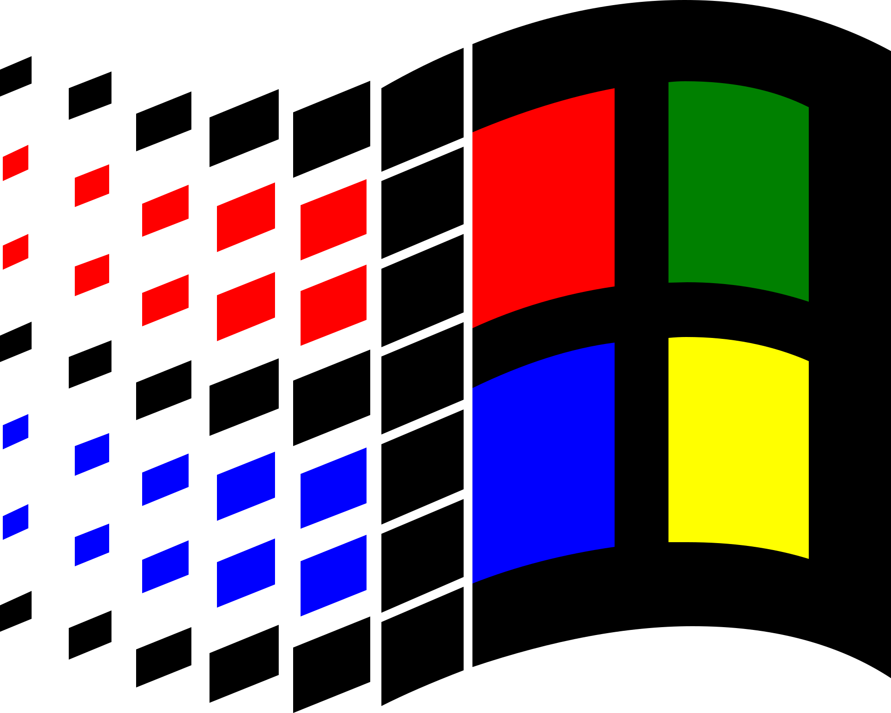
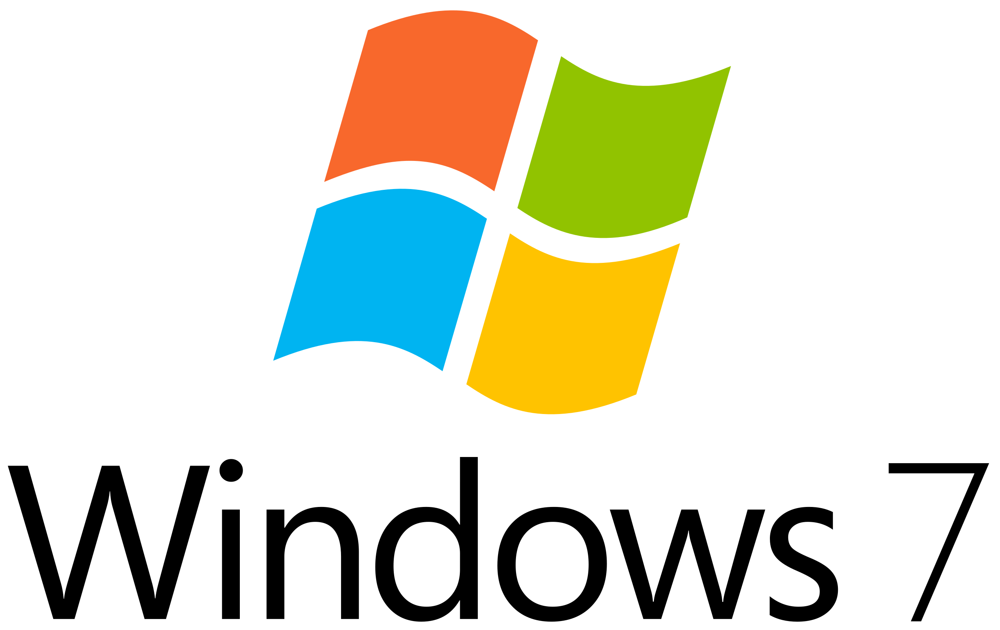

Sejarah Windows: Perjalanan Evolusi Sistem Operasi Paling Populer di Dunia
Admin February 4, 2024 4 mins read
Windows, sistem operasi yang telah menjadi pilar dalam dunia komputasi, telah mengalami perjalanan yang luar biasa sepanjang beberapa dekade terakhir. Dengan melibatkan jutaan pengguna di seluruh dunia, Windows terus berkembang dan mengalami perubahan signifikan sejak diluncurkan pertama kali. Mari kita telusuri sejarahnya dan melihat bagaimana Windows telah mengubah cara kita berinteraksi dengan komputer.
Windows 1.0 - Langkah Pertama (1985)
Windows 1.0 diluncurkan pada tanggal 20 November 1985 oleh Microsoft. Meski belum mendapat respon positif secara umum, Windows 1.0 membawa konsep antarmuka grafis (GUI) yang lebih ramah pengguna ke dunia komputasi pribadi. Fitur-fitur utama termasuk Paint, Windows Notepad, dan aplikasi kalkulator.
Windows 3.0 - Era GUI Berkembang (1990)
Diluncurkan pada tahun 1990, Windows 3.0 membawa perubahan signifikan dengan dukungan untuk lebih banyak warna, ikon, dan aplikasi baru. Program pengolah kata dan spreadsheet seperti Microsoft Word dan Excel juga menjadi bagian dari paket Windows 3.0, membuatnya lebih menarik bagi pengguna bisnis.
Windows 95 - Awal Era Baru (1995)
Diluncurkan pada tahun 1990, Windows 3.0 membawa perubahan signifikan dengan dukungan untuk lebih banyak warna, ikon, dan aplikasi baru. Program pengolah kata dan spreadsheet seperti Microsoft Word dan Excel juga menjadi bagian dari paket Windows 3.0, membuatnya lebih menarik bagi pengguna bisnis.
Windows XP - Stabilitas dan Keamanan (2001)
Dengan fokus pada stabilitas dan keamanan, Windows XP diluncurkan pada tahun 2001 dan menjadi sangat populer di kalangan pengguna bisnis dan konsumen. Antarmuka yang lebih halus, dukungan untuk perangkat keras baru, dan peningkatan keamanan menjadikan XP sebagai salah satu versi Windows yang paling bertahan lama.
Windows Vista - Tantangan dan Pembelajaran (2007)
Meski mendapat kritik atas masalah kinerja dan keamanan, Windows Vista yang diluncurkan pada tahun 2007 membawa perubahan signifikan dalam antarmuka pengguna dan fitur keamanan. Ini menjadi pengalaman pembelajaran bagi Microsoft tentang pentingnya memahami kebutuhan pengguna dan memperhatikan kinerja sistem.
Windows 7 - Kejayaan Kembali (2009)
Windows 7, diluncurkan pada tahun 2009, menjadi favorit banyak pengguna dengan kembalinya Start Menu yang lebih dioptimalkan dan peningkatan keamanan. Dengan performa yang lebih baik, Windows 7 membuktikan diri sebagai salah satu versi Windows yang paling sukses.

Windows 8/8.1 - Cobaan Desain yang Berani (2012)
Windows 8 menampilkan perubahan drastis dalam antarmuka dengan pengenalan layar Start yang penuh warna dan fokus pada perangkat sentuh. Meski mendapat tanggapan campuran, Windows 8.1 menghadirkan perbaikan dan memperbaiki sejumlah kelemahan antarmuka pengguna.
Windows 10 - Konvergensi Universal (2015)
Diluncurkan pada tahun 2015, Windows 10 menandai kembalinya Start Menu dengan sentuhan modern dan membawa konsep aplikasi universal yang dapat berjalan di berbagai perangkat, termasuk PC, tablet, dan ponsel. Windows 10 juga memperkenalkan asisten digital, Cortana, serta peningkatan keamanan dengan Windows Hello.

Windows 11 - Masa Depan Windows (2021)
Windows 11, yang dirilis pada tahun 2021, membawa antarmuka pengguna yang lebih modern dengan tata letak yang lebih terpusat dan dukungan untuk aplikasi Android. Ini menandai upaya Microsoft untuk tetap relevan di era komputasi yang terus berkembang.
Seiring berjalannya waktu, Windows terus berevolusi untuk memenuhi tuntutan teknologi dan kebutuhan pengguna. Dengan sejarah yang panjang dan beragam, Windows tetap menjadi kekuatan dominan dalam dunia sistem operasi komputer dan terus berusaha untuk membawa inovasi ke dalam kehidupan pengguna di seluruh dunia.